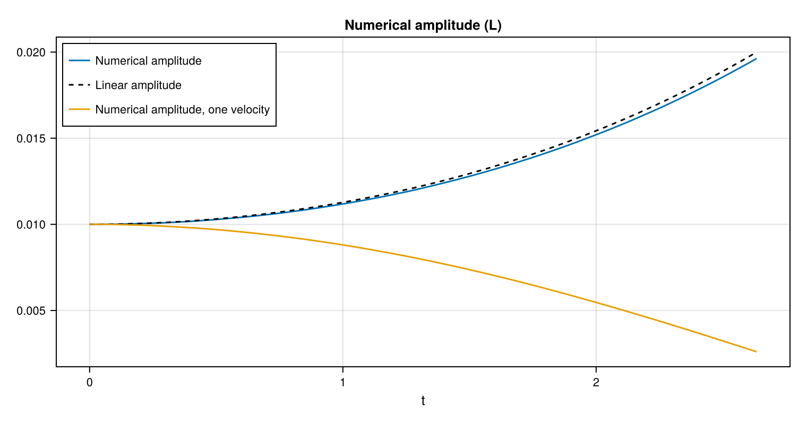
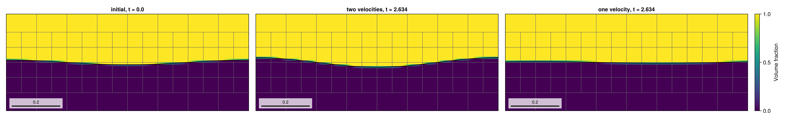
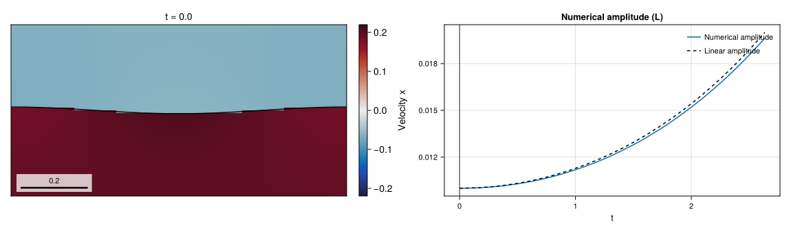
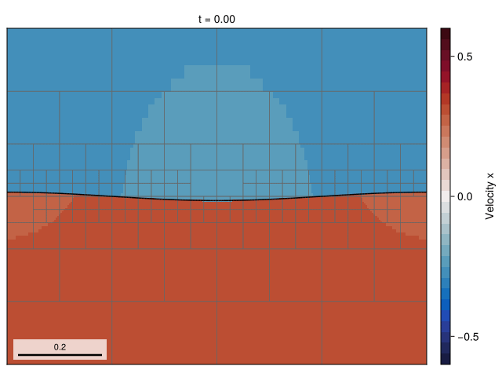

07 – Interfacial instability
A tangential velocity jump and gravity perturb a heavy-over-light interface, comparing one- and two-velocity closures with linear theory.

At a glance
| Physics | Inviscid two-phase Kelvin–Helmholtz/Rayleigh–Taylor case; ρ_l/ρ_g=3, We=0.5, Bo=0.75, wavelength 1, initial amplitude 0.01. The denser liquid starts above the gas; gravity points downward and surface tension is derived from the density and wavelength. The domain is [0,1] × [-1.5,1.5], periodic in x and free-slip at the y walls. |
| Algorithms | The default TwoVelocityModel() uses separate phase velocities, frozen-interface WY transport, and CMDGFMProjection() (BiCGSTAB with the default pressure-GMG/jump-ILU block preconditioner). Surface tension uses CGFM; PLIC normals use LHF with WY fallback, momentum uses Lax–Wendroff, and interface AMR refines to max_level, checking every 5 steps with coarsening delay 2: square cells on every level, dx = dy = 1/8 on level 0 and 1/128 at the default level 4 around the interface (128 cells per wavelength, 1.3 cells across the initial amplitude), level 1 (1/16) in the far field. The example sets both dynamic viscosities to zero, so no viscous solve is needed. |
| Worth varying | density_ratio=3.0, weber=0.5 and bond=0.75 change the derived physical parameters; max_level=4 sets the AMR ceiling; final_time=nothing selects the linear doubling time in the unstable case; the default velocity_model=TwoVelocityModel(...) resolves the velocity jump, while OneVelocityModel() replaces it by its density-weighted mean. |
| Validated against | The :amplitude history is compared with :analytical_amplitude from small-amplitude linear theory. At t=2 acosh(2)≈2.634, the two-velocity amplitude is 0.0196288 versus 0.02, a maximum sampled absolute error of 3.71158e-4; the one-velocity closure ends at 0.00260283. |
| Cost | Default and :docs: level 4, T≈2.634, 859 steps and 6144 final cells for two velocities. On one thread, setup and simulation took 68.58 s for two velocities and 19.79 s for one; the whole figure script, including the level-5 README animation run and rendering, took 520.1 s. |
Gallery timings: Julia 1.12.7, one Julia thread and one BLAS thread, AMD Ryzen 9 5950X; package loading is excluded.
Setup
For k=2π, the example computes
\[\rho=(1,1/3),\quad \sigma=\frac{\rho_l+\rho_g}{k^3},\quad g=\frac{\mathrm{Bo}(\rho_l+\rho_g)}{k(\rho_l-\rho_g)},\quad \eta(x,0)=0.01\cos(kx).\]
The velocity jump is (ρ_l+ρ_g)√(We/(ρ_lρ_g))/k, with phase speeds chosen to give zero density-weighted mean. For r=1-We-Bo, the linear height at x=0 is 0.01 cosh(√(-r)t) when r<0, and 0.01 cos(√r t) otherwise. The one-velocity run starts from the density-weighted mean rather than the discontinuous phase velocities, so it represents a different closure and is not expected to reproduce the same instability. See the method reference for two-velocity transport and CMDGFM projection.
Run
From the repository root, in a Julia session started with --project=examples:
include("examples/07_interfacial_instability/interfacial_instability.jl")
run = run_example()
@show diagnostic_history(run.flow, :amplitude).values[end]
@show diagnostic_history(run.flow, :analytical_amplitude).values[end]Run the example headlessly or regenerate the Cairo figures:
julia --project=examples examples/07_interfacial_instability/interfacial_instability.jl
julia --project=examples -e 'include("examples/07_interfacial_instability/make_figures.jl"); make_figures()'Append --studio to the example command to follow the run in a browser; press Ctrl+C to close Studio after the run.
size=:docs and size=:default use the same default level 4 and physical end time; the gallery runs both models.
Results
The two-velocity amplitude reaches 0.0196288 against the linear reference 0.02, with maximum sampled absolute difference 3.71158e-4. The one-velocity result reaches 0.00260283; its difference from the same reference reflects a different closure, not just discretization error.

The interface panels show the initial two-velocity state and the final state from each model in a window of one wavelength by 0.4 wavelengths with square cells. Keyframe titles use the actual nearest completed-step times, and gray outlines mark AMR blocks.

The two-velocity run until the amplitude doubles: the horizontal phase velocities and the interface in the same window, next to the numerical and linear amplitudes with a cursor at the shown time.

The repository README animation is a Kelvin–Helmholtz case well into the non-linear phase: no gravity (bond=0), weber=3 and density_ratio=1.2, so the wavelength-one mode grows at the linear rate √(We−1)≈1.41, on a level-5 mesh (dx = dy = 1/256 around the interface) until t=4.5, about 6.4 linear e-folding times. The interface steepens, overturns into an S-shaped fold and rolls up into a long tongue while surface tension keeps it smooth. The horizontal velocity is the liquid's in the liquid (initially -0.25) and the gas's in the gas (0.30), so the shear layer stays a sharp velocity jump at the PLIC interface. make_figures samples 55 stored keyframes on a uniform simulation-time grid and writes 41 output frames, so video time advances linearly in simulation time, in a light and a muted dark variant (readme_light.gif, readme_dark.gif) with one colour range of 31 levels in which only the fold-tip peaks saturate. The run took 4149 steps and 365.5 s on one thread (24768 final cells).
Variations
run_example(max_level = 5) # finer AMR ceiling
run_example(velocity_model = OneVelocityModel()) # mean-velocity closure
run_example(weber = 0.25, bond = 0.5, final_time = 1.0) # linearly stable regimeFiles
- interfacial_instability.jl – setup, two closures and amplitude diagnostics.
- make_figures.jl – two-run comparison, interface snapshots, and the repository README animation.